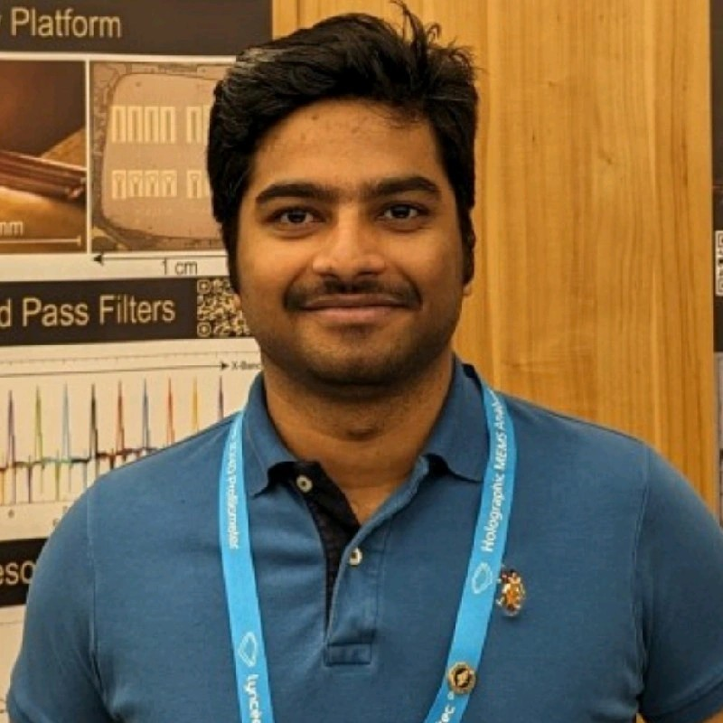

Applied Scientist @ AWS Center for Quantum Computing
Pasadena, CA
Building scalable architectures for fault-tolerant quantum computers. Passionate about device physics, MEMS, RF magnetics for 6G, and translating fundamental research into deployable quantum technologies.
Research on scalable architectures for fault-tolerant quantum computing at AWS. Focused on qubit integration, advanced packaging, and system-level co-design for next-generation quantum processors.
Pioneering magnetostatic wave (MSW) resonators and filters for next-generation wireless communication. Authored publications in Nature Electronics and Nature on spin-wave filters for 6G communication.
Designed novel piezoelectric MEMS devices for sensing and actuation. First-author work in Nature Microsystems & Nanoengineering on a tip-coupled cantilever microsystem for viscosity sensing.
Developed low-cost, contamination-free fabrication processes for PZT-on-SOI devices. Pioneered deep anisotropic etching of GGG substrates for high-performance MSW resonators.
Nature (2026)
Nature Electronics (2025)
Nature Communications 15, 7764 (2024)
Nature Microsystems & Nanoengineering 9, 34 (2023)
Tiwari, S., Pratap, R.
Indian Patent Application 202041024905 (2020)
Devitt, C., Bhave, S. A., Tiwari, S.
US Patent Application (2025)